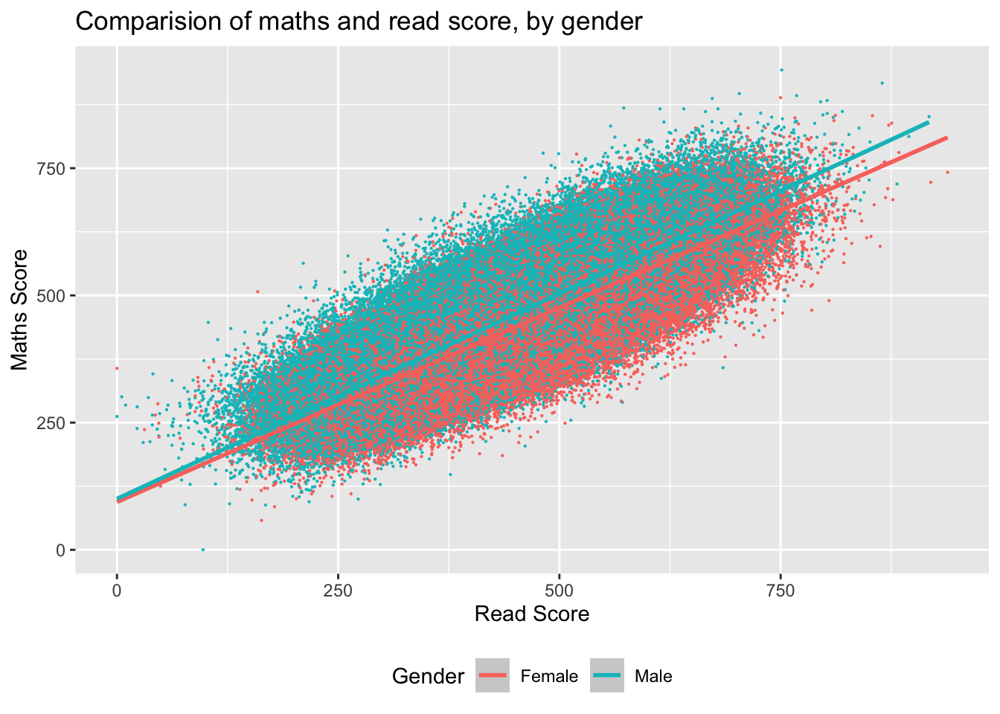

I wanted to compare the maths and reading scores and then the science and maths scores and see if there were any gender differences. As expected for both comparisons there is a positive correlation for both genders. There is not much difference between the line of best fit when comparing science and maths, maybe to be expected: as it is a similar skill set? However, looking at the comparison of the reading and maths scores, it is interesting to note that as the scores increase the distance between the line of best fit for different genders increases, slightly so that the males are slightly higher in maths scores compared to females.
library(arrow)library(tidyverse)PISA_2022 <-read_parquet("/Users/k1765032/Library/CloudStorage/GoogleDrive-richardandrewbrock@gmail.com/.shortcut-targets-by-id/1c3CkaEBOICzepArDfjQUP34W2BYhFjM4/PISR/Data/PISA/2022/PISA_student_2022_subset.parquet")maths_read <- PISA_2022 %>%select(ST004D01T, PV1READ, PV1MATH)%>%na.omit()ggplot (data =maths_read, aes (x= PV1READ, y =PV1MATH, colour = ST004D01T)) +geom_point(size =0.1) +geom_smooth(method ='lm') +xlab("Read Score") +ylab("Maths Score") +ggtitle("Comparision of maths and read score, by gender") +theme(legend.position ="bottom") +labs(colour ="Gender")

maths_sci <- PISA_2022 %>%select(ST004D01T, PV1SCIE, PV1MATH)%>%na.omit()ggplot(data = maths_sci, aes(x = PV1SCIE, y =PV1MATH, colour = ST004D01T)) +geom_point(size =0.1) +geom_smooth(method ='lm') +xlab("science Score") +ylab("Maths Score") +ggtitle("Comparision of maths and science Score, by gender")+theme(legend.position ="bottom")+labs(colour="Gender")
I then wanted to see if the United Kingdom followed the same pattern. There are similar trends, but the gap between female and male reading and maths scores starts a little earlier.
maths_read_UK <- PISA_2022 %>%select(ST004D01T, PV1READ, PV1MATH, CNT)%>%na.omit() %>%filter (CNT =="United Kingdom")ggplot (data =maths_read_UK, aes(x= PV1READ, y =PV1MATH, colour = ST004D01T))+geom_point(size =0.1) +geom_smooth (method ='lm')+xlab("Read Score")+ylab("Maths Score")+ggtitle("Comparision of maths and read Score, by gender, in United Kingdom")+theme(legend.position ="bottom")+labs(colour ="Gender")
Then I wanted to see the trends using a bar chart, as I wondered if this would be clearer. In all countries there is a higher % of males that have maths scores better than reading scores.
maths_better <- PISA_2022 %>%mutate(maths_better = PV1READ< PV1MATH) %>%select(ST004D01T, PV1READ, PV1MATH, CNT, maths_better) %>%filter(!is.na(ST004D01T),!is.na(maths_better)) %>%group_by (ST004D01T, CNT) %>%mutate(students_n =n()) %>%filter(maths_better =="TRUE") %>%group_by (ST004D01T, CNT, maths_better) %>%summarise(n =n(),per =100*n/unique(students_n))maths_bettersci <- PISA_2022 %>%mutate(maths_better = PV1SCIE< PV1MATH) %>%select(ST004D01T, PV1SCIE, PV1MATH, CNT, maths_better) %>%filter(!is.na(ST004D01T),!is.na(maths_better)) %>%group_by (ST004D01T, CNT) %>%mutate(students_n =n()) %>%filter(maths_better =="TRUE") %>%group_by(ST004D01T, CNT, maths_better) %>%summarise(n =n(), per =100*n/unique(students_n))ggplot(data = maths_bettersci, aes (x = CNT, y = per))+geom_bar(aes(fill = ST004D01T), position =position_dodge(),stat="identity") +theme(axis.text.x =element_text(angle =90, vjust =0.5, hjust=1)) +theme(legend.position ="bottom") +xlab("Country") +ylab("% students maths better than science") +ggtitle("Comparision of maths and science score, by country and gender") +labs(fill ="Gender")
I then looked at comparing maths and science scores. It is interesting that there is not so much of a gender difference, it would appear that the % of males doing better in maths compared to science and read are similar, but when comparing science to maths, here the % of females who do better in maths when compared to science is higher than when compared to read. Then comparing reading and science scores. This time % read was better. Here the % of females for every country is higher than male. It appears as if there is an international trend generally.
read_bettersci <- PISA_2022 %>%mutate(read_better = PV1SCIE< PV1READ) %>%select(ST004D01T, PV1SCIE, PV1READ, CNT, read_better) %>%filter(!is.na(ST004D01T),!is.na(read_better)) %>%group_by (ST004D01T, CNT) %>%mutate(students_n =n()) %>%filter(read_better =="TRUE")%>%group_by(ST004D01T, CNT, read_better) %>%summarise(n=n(),per =100*n/unique(students_n))ggplot(data =read_bettersci, aes(x=CNT, y= per))+geom_bar(aes(fill = ST004D01T),position=position_dodge(), stat='identity')+theme(axis.text.x =element_text(angle =90, vjust =0.5, hjust=1)) +theme(legend.position ="bottom") +xlab("Country") +ylab("% students read better than science") +ggtitle("Comparision of read and science score, by country and gender")+labs(fill ="Gender")